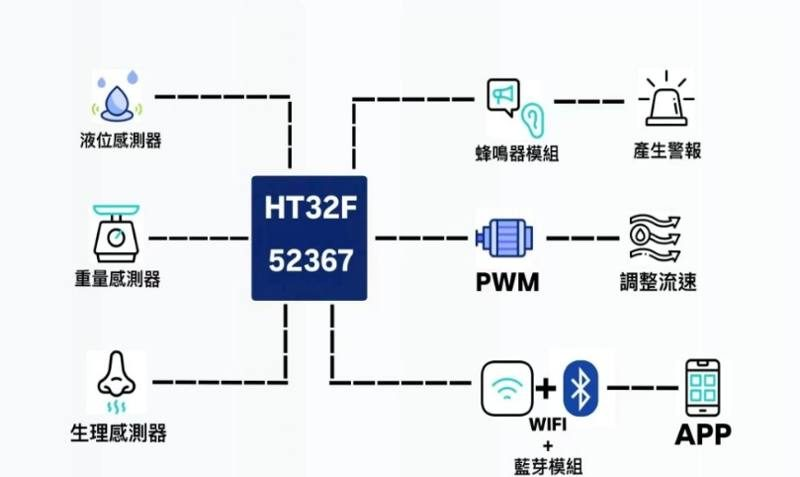
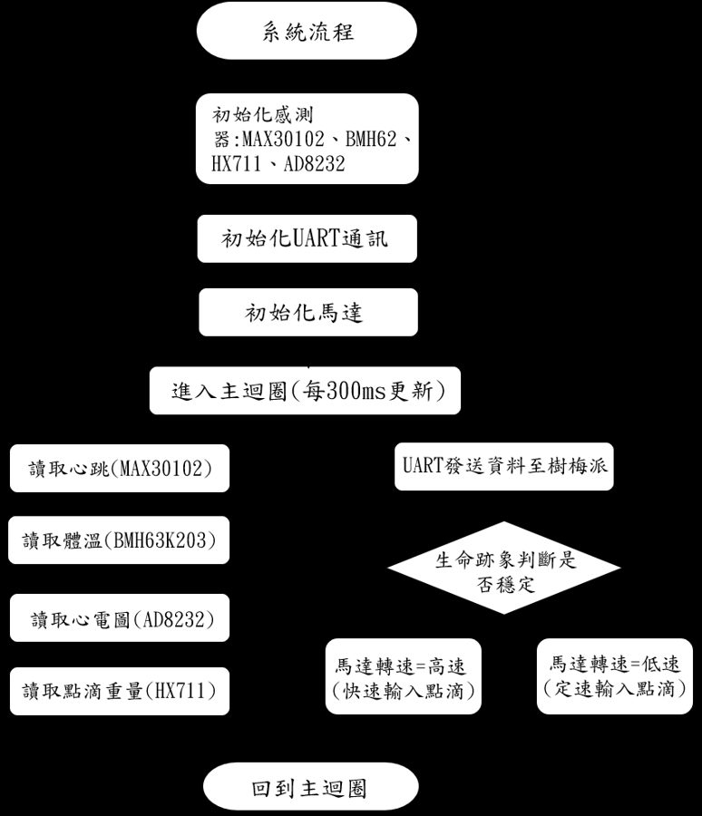
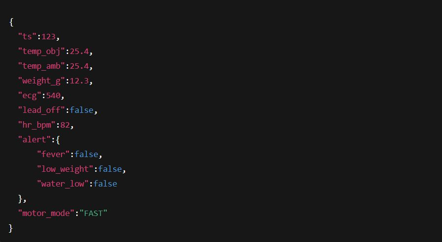
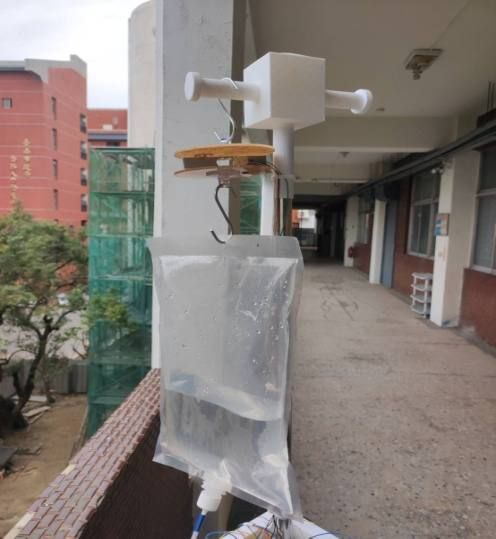
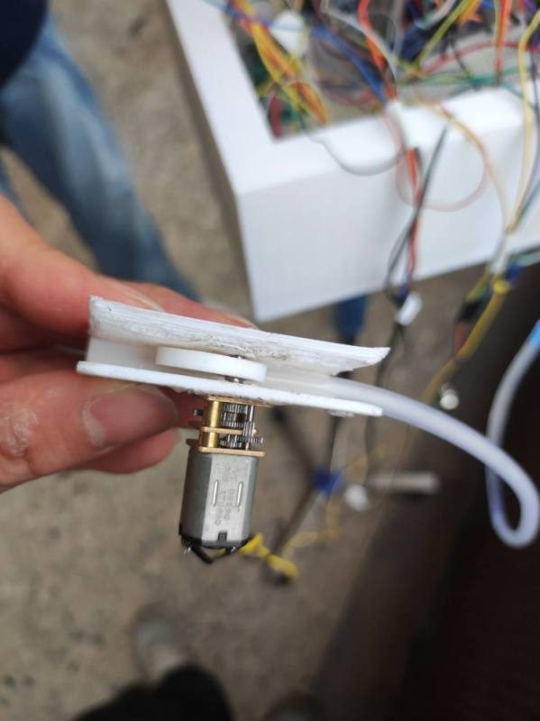
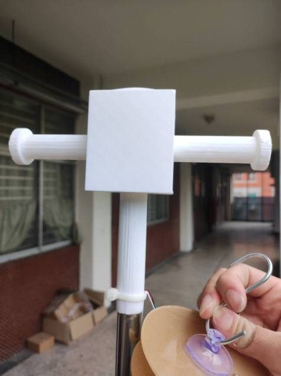
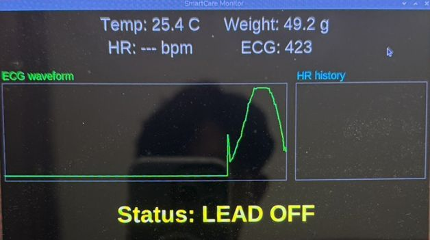

一套整合點滴監測、生理訊號量測、警報通知與歷史紀錄的照護系統。大學專題完成單床版本，並以此參加盛群盃（入圍）；之後擴充為多床位集中監控系統，獲得第 21 屆數位訊號處理創思設計競賽健康照護應用組佳作。
A care system that combines IV drip monitoring, vital-sign sensing, alerts and history logging. The single-bed version was my capstone (Holtek Cup finalist); it was later extended into a multi-bed centralized system that won a Merit Award at the 21st DSP Creative Design Contest.
App 與資料庫開發：Flutter App、BLE 資料接收、SQLite 歷史紀錄、警報與推播通知（專題貢獻度 30%）。盛群盃版本中，除硬體以外的軟體皆由我負責。
App & database development: Flutter app, BLE data reception, SQLite history and alert notifications (30% project contribution). For the Holtek Cup version I handled all software except the hardware.
臥床患者的點滴與生命徵象多仰賴人工巡視，夜間巡視頻率低時容易出現滴空、滴速不穩或異常延遲發現。我們希望用一套低成本的設備，同時監測點滴與多項生理指標，並在異常時即時通知照護者。
IV drips and vital signs of bedridden patients are mostly checked by manual rounds, so empty drips, unstable flow or late detection happen — especially at night. We wanted a low-cost device that monitors both and alerts caregivers immediately.
系統分為感測層、控制層、通訊層：感測器將物理量轉為電訊號，HT32 微控制器負責擷取、判斷與輸出，再以藍牙傳到手機、UART 傳到樹莓派監控畫面。
Three layers — sensing, control and communication. Sensors convert physical quantities to signals, the HT32 MCU acquires and decides, then data goes to the phone over BLE and to a Raspberry Pi monitor over UART.



| 元件Part | 量測項目Measures | 選用理由Why |
|---|---|---|
| XKC-Y25 | 點滴液位IV liquid level | 非接觸式，安裝彈性佳Non-contact, flexible mounting |
| HX711 + Load cell | 點滴重量IV weight | 24-bit 解析度，可偵測細微變化24-bit resolution |
| MAX30102 | 心率、血氧Heart rate, SpO₂ | 單一模組同時提供兩項Both in one module |
| AD8232 | 心電訊號ECG | 可偵測電極脫落Lead-off detection |
| BMH63K203 | 體溫Body temperature | 紅外線非接觸式Infrared, non-contact |
| HT32F52367 | 主控 MCUMain MCU | ADC · UART · I²C · PWM |
因為市售零件不合用，團隊以 3D 列印自製偏心輪、夾殼與點滴掛架。偏心輪旋轉時對點滴管週期性施壓、改變管徑，就能透過 PWM 控制馬達調整滴速。
The team 3D-printed an eccentric cam, clamp and IV hanger. The rotating cam squeezes the tube periodically, so motor PWM controls the drip rate.




3D 列印零件因公差沒算好，裝不起來。
3D-printed parts did not fit due to tolerances.
重新量測，先低品質試印確認配合度再修正。
Re-measured and test-printed at low quality before final prints.
偏心輪壓不動、壓太緊或太鬆，無法控速。
The cam squeezed too hard or too little to control flow.
更換不同軟硬度管材、改為半圈作動並重新設計外形。
Tried different tubing, switched to half-turn actuation and redesigned the cam.
心率感測器讀到的是光強度，不是心率。
The PPG sensor outputs light intensity, not heart rate.
峰值偵測算出心跳間隔 Δt，BPM = 60/Δt，再以移動平均平滑並濾除異常值。
Peak detection → beat interval Δt, BPM = 60/Δt, smoothed with a moving average and outlier rejection.
病人翻身、電極鬆脫時常常誤發警報。
Motion and loose electrodes caused false alarms.
資料「有收到」不代表「可以相信」──這成為我想研究訊號品質評估的起點。
Receiving data ≠ trusting data — the starting point of my interest in signal quality assessment.